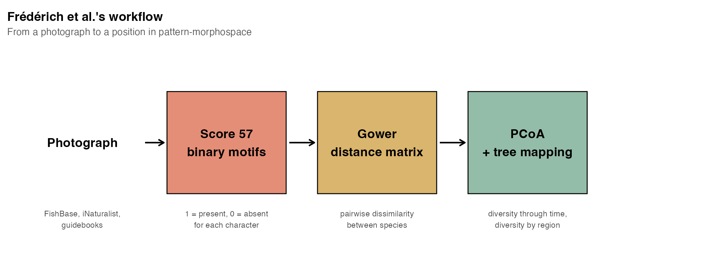
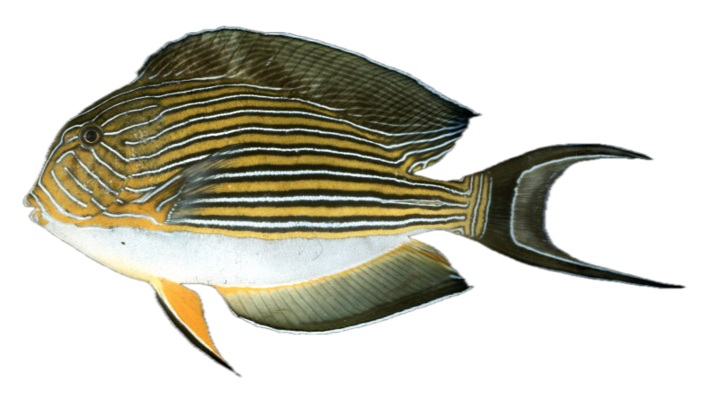
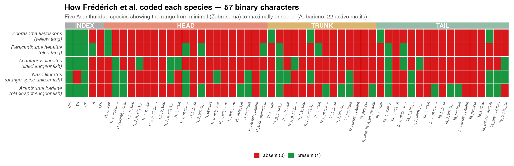
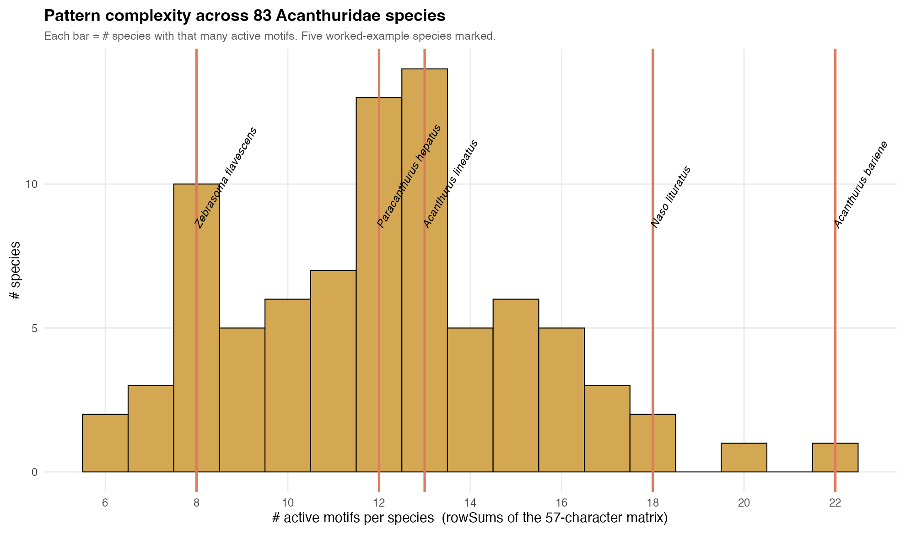
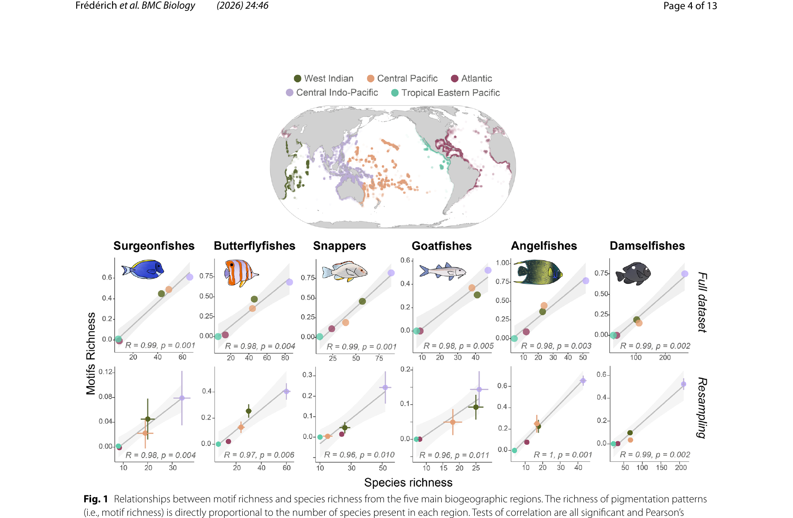
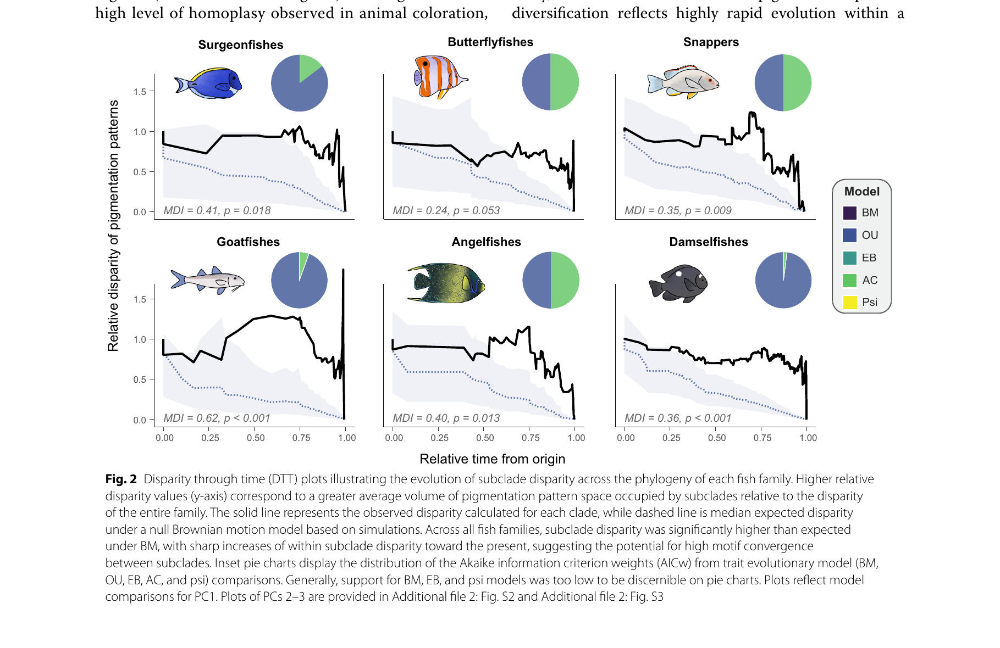

Demo 7 — Mapping Color Patterns onto a Phylogeny
EEB 187: Ecology and Evolution of Color
Today’s big question
Do closely related fish species have similar color patterns?
Or does natural selection override evolutionary history?
We’ll answer this with data, a phylogeny, and two statistical tests.
What is a phylogeny?
- A family tree for species
- Branch lengths = time (millions of years)
- Closely related species share a recent common ancestor
- The tree is estimated from DNA sequences
Today’s tree: 65 surgeonfish species (Acanthuridae)
Root age: 65 million years — right at the end-Cretaceous extinction!
┌── Acanthurus
┌───┤
│ └── Ctenochaetus
────┤
│ ┌── Zebrasoma
└───┤
└── Naso(simplified — the real tree has 65 tips)
Frédérich et al. 2026 — the paper at a glance
Rapid and repeated evolution of pigmentation patterns in reef fishes. Frédérich, Mittelheiser, Gillet, Hodge, Laudet & Dornburg. BMC Biology (2026) 24:46. https://doi.org/10.1186/s12915-026-02544-4

The scope
- 6 reef-fish families
- 918 species total
- 75%+ of extant diversity in every family
The coding
- 30 motifs (stripes, spots, eyespots, marbling, beehive, saddle, …)
- × 3 body regions (head, trunk, tail)
- = a per-species binary fingerprint
The analyses
- Gower distance → PCoA
- Disparity-through-time (DTT)
- Blomberg’s K, OU vs BM vs AC
- Motif richness ↔︎ species richness
Today: the Acanthuridae sub-dataset → 83 species × 57 columns (the 30 motifs expand to 57 binary columns with “1 vs 2+” splits, eye-overlap variants, and 5 whole-body indices).
How they coded color — body regions × motifs
Motif vocabulary (scored in each region)
| Motif | Description |
|---|---|
| h-stripe / v-stripe / o-stripe | horizontal / vertical / oblique lines (oblique = head only) |
| stain | large irregular patch |
| point | small spot |
| eyespot | concentric ring (often a false eye) |
| stripe/stain through eye | motif that overlaps the eye region |
| marbling | reticulate / vermiculate |
| beehive | honeycomb / hexagonal |
| saddle | curved band across tail |
| colored / stained scalpel | the Acanthuridae spine pigment |
Each scored as 1 = present, 0 = absent, with extra splits for 1 vs 2+ occurrences (e.g., H_2_h_strips_+ means 2 or more horizontal stripes on the head).
Three species, coded — the intuition

Zebrasoma flavescens
8 active motifs
Mostly one color + scalpel

Acanthurus lineatus
13 active motifs
Stripe signature on head, trunk, tail

Naso lituratus
18 active motifs
Marbled face + colored scalpel + saddle
The pattern complexity score is just rowSums(motifs) — the headline number you’ll map onto the tree today.
Five species, all 57 characters — the formal view

- Each row = a species; each column = one of the 57 binary characters.
- Green = motif present (1); red = absent (0).
- Top bands label the body region: INDEX · HEAD · TRUNK · TAIL.
- Range from 6 active motifs (Zebrasoma rostratum) to 22 (Acanthurus bariene) across the family.
Pattern complexity varies across the family

Distribution of motif counts across 83 Acanthuridae species. Median = 12. Min = 6 (Zebrasoma rostratum). Max = 22 (Acanthurus bariene).
This single number per species is what you’ll run through contMap, Blomberg’s K, and Pagel’s λ in the worksheet.
Result 1 — motif richness tracks species richness

- Fig 1 from Frédérich et al. 2026. Each panel = one family × 5 biogeographic regions. Top row = full dataset, bottom row = re-sampled to avoid widespread-species inflation.
- Every family × every sampling regime: R > 0.96, p < 0.01. More species in a region → more motif diversity.
- Implication: speciation events drive pattern divergence — pattern diversity scales linearly with the species pool, not with the latitude/longitude of the reef.
Result 2 — pattern evolution is rapid AND bounded

Phylogenetic signal is weak in every family (multivariate Blomberg’s K, all p < 0.01):
| Family | K_mult |
|---|---|
| Acanthuridae | 0.11 |
| Chaetodontidae | 0.10 |
| Lutjanidae | 0.22 |
| Mullidae | 0.08 |
| Pomacanthidae | 0.05 |
| Pomacentridae | 0.06 |
- Best-fit evolutionary model: OU1 (single optimum, bounded morphospace) + AC (accelerating rate).
- Phylogenetic half-life ≈ 1.5 Myr vs ~37.5 Myr for other fish morphological traits.
Punchline: patterns evolve fast within a constrained set of motifs → strong convergence + recurring labyrinths, stripes, spots across distantly related lineages.
What is phylogenetic signal?
The tendency for closely related species to resemble each other more than distantly related species.
Strong signal
Relatives look alike → color patterns evolve slowly
Pattern is “conserved” on the tree
Weak/no signal
Relatives look different → color changes fast, convergence is common
Pattern evolves independently of relatedness
We measure this with two statistics: Blomberg’s K and Pagel’s λ
Blomberg’s K — what the number means
| K value | Interpretation |
|---|---|
| K = 0 | No signal — trait is random on the tree |
| 0 < K < 1 | Signal exists, but weaker than expected under Brownian motion |
| K = 1 | Trait matches Brownian motion prediction exactly |
| K > 1 | Relatives are MORE similar than Brownian motion predicts |
The p-value tells you if the signal is statistically significant:
- p < 0.05 → yes, there’s real signal
- p > 0.05 → can’t distinguish from random
K = 0.16 with p = 0.04 → “there IS signal, but it’s modest — color patterns show some phylogenetic conservatism but also a lot of independent change”
contMap — painting traits on the tree
contMap reconstructs ancestral trait values and paints them along every branch.
- Cool colors (blue) = simple patterns
- Warm colors (red) = complex patterns
- You can SEE where on the tree complexity changed
- Look for abrupt shifts — those are evolutionary events
You’ll generate one of these in Section 5 of the worksheet.
The most complex species? Acanthurus bariene — 19 pattern elements!
The simplest? Zebrasoma rostratum — only 4 elements.
Discrete traits — mapping presence/absence
Not all traits are continuous. Some are binary: the species either has it or doesn’t.
Example: trunk marbling (irregular worm-like markings)
- 17 of 62 species have trunk marbling
- Concentrated in Acanthurus (11/26) and Ctenochaetus (3/6)
- Absent in Zebrasoma, Prionurus, Paracanthurus
Discussion question:
Is marbling a Turing pattern?
Think back to Lecture 12 — reaction-diffusion produces labyrinthine patterns that look a lot like “marbling.”
You’ll color tree tips by marbling presence and ask: how many times did it evolve?
The workflow — what you’ll do today
| Step | Section | What you do | What you learn |
|---|---|---|---|
| 1 | §1–2 | Load tree + plot it | How a phylogeny looks in R |
| 2 | §3 | Load color data | What coded pattern traits look like |
| 3 | §4 | Match tree ↔︎ data | The “golden rule” of comparative methods |
| 4 | §5 | Create complexity score | Summarizing many traits into one number |
| 5 | §6 | contMap | Painting a trait on the tree |
| 6 | §7 | Blomberg’s K + Pagel’s λ | Testing phylogenetic signal |
| 7 | §8 | Map trunk marbling | Discrete traits on a tree |
| 8 | §9 | Pick your own trait | Independent analysis |
~60 minutes of guided work, then 15 minutes on your own
What you’ll turn in
Screenshot of your contMap (pattern complexity on the tree)
Your K and λ values with a one-sentence interpretation each
Your chosen trait from “Your Turn” — which trait did you pick? What was K? Was it significant?
One paragraph: “Is color pattern diversity phylogenetically conserved in surgeonfishes? Why or why not?”
There is no single “right answer” — we want a nuanced interpretation backed by your data.
Getting started
Open RStudio
Set your working directory:
setwd("path/to/demo-labrid-pcm-week8")Open the worksheet:
demo7-worksheet.qmd(or the HTML version in your browser)Work through it section by section — don’t skip ahead
Talk to your neighbor. If you’re stuck, ask. If you’re not stuck, explain what you’re seeing.
Let’s go!